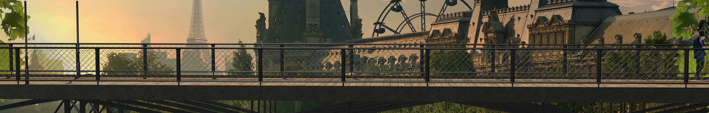

<section class="dorne-welcome-area bg-img bg-overlay panels-container">
    <drag-scroll class="drag-scroll-section" scrollbar-hidden="true" drag-scroll-y-disabled="true">
        

        

        

        
    </drag-scroll>

    <map name="image-map" *ngIf="zoomCount === 3">
        <area target="" alt="section 1" title="section 1" href="" coords="654,771,223,545" shape="rect" (click)="chooseSection($event)" class="image-area">
        <area target="" alt="section 2" title="section 2" href="" coords="661,559,1106,771" shape="rect" (click)="chooseSection($event)" class="image-area">
    </map>
</section>